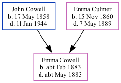

Emma Jane Cowell cFeb 1883 - c1883
[ Home ] | [ Calendar ] | [ Surnames Index ] | [ Family History ]The child of John Cowell (a farm waggoner) and Emma Culmer, Emma Cowell, the great-aunt of Nigel Horne, was born in Thanet, Kent, England c. Feb 18831,2,3 and baptized in Minster, Thanet, Kent, England on Feb 3, 1883.
She died c. May 1883 in Thanet2 and was buried at St Mary The Virgin Church, Minster in Thanet on Jul 3, 18834,5.
Parents
- John was born on May 17, 1858
- Emma was born on Nov 15, 1860
Citations
- England & Wales births 1837-2006 - Findmypast
- England & Wales deaths 1837-2007 - Findmypast
- Kent Burials - Findmypast
- Kent Burials - Findmypast
- England Deaths & Burials 1538-1991 - Findmypast
Media
England Births & Baptisms 1538-1975 - R_884575296
Kent Baptisms - GBPRS/CANT/B/96511951
England & Wales births 1837-2006 - BMD/B/1883/1/AZ/000132/166
England & Wales deaths 1837-2007 - BMD/D/1883/2/AZ/000078/168
England Births & Baptisms 1538-1975 - R_938002772
Kent Burials - GBPRS/CANT/D/95349321
England Deaths & Burials 1538-1991 - R_276551633
Family Tree
Generated by Ged2Site. Last updated on Jul 20, 2025